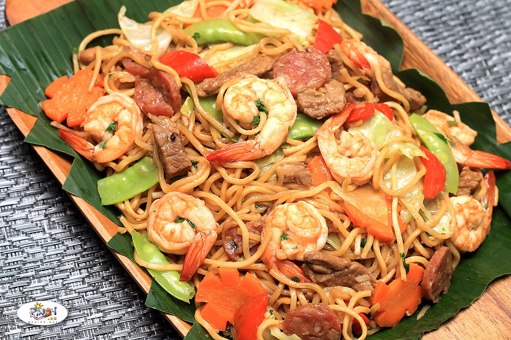

Pancit Canton
Pancit Canton is a popular Filipino dish, and one of my favourite dishes growing up!
It's quick to make, requiring less than ten ingredients. It's also easy yo make a bunch
at once, so you can bring it for potlucks, parties, and celebtrations, or even just to
eat during the week.
There are two versions of the recipe: vegetarian and seafood. In both versions I use bok choy and green onions in place of snap
peas and carrots, but feel free to add those in! One more thing: I don't measure, so go with what feels like the right amounts in
relation to how many noodles you're cooking.
----------
Ingredients (Seafood):
- Canton Noodles (3 packs)
- Squid
- Shrimp
- Canola oil or Vegetable Oil
- Green onions (x3)
- Bok choy (2-3 stocks)
- Salt and Pepper (to taste)
- Soy Sauce (to taste)
- Minced Garlic
- Unsalted Butter
----------
Ingredients (Vegetarian):
- Canton Noodles (3 packs)
- Fried Tofu cubes (firm)
- Green onions (x3)
- Bok choy (2-3 stocks)
- Canola oil or Vegetable Oil
- Salt and Pepper (to taste)
- Soy Sauce (to taste)
- Minced Garlic
- Unsalted Butter
----------
Steps:
1. Fill a large pot with water and bring to a boil.
2. While pot is heating up, wash and chop green onions
and bok choy. Set aside.
3. Heat up a large cast iron skillet on medium heat, add butter. Once butter
is melted, add in bok choy and cook until bright green and slightly soft.
Set cast iron skillet aside, but do not remove the bok choy.
4. When water is boiling, add in the canton noodles and cook until
partially to mostly soft. Drain noodles and wash with cold water for 30 seconds
to 1 minute. This is to prevent the noodles from continuing to cook and going soggy.
5. Seafood version: put shrimp and squid in a skillet and partially with water. Steam
until mostly cooked, then drain. Vegetarian version: drizzle canola (or vegetable) oil
into a skillet on medium heat. Sear fried tofu cubes until they are properly heated,
then remove from heat.
6. Return bok choy to stove on low to medium heat, then add protein of choice. Add more
butter if desired. Stir until ingredients are properly coated, then add minced garlic, cooking for
1-2 more minutes.
7. Turn stove down to simmer, then add canton noodles. Add soy sauce, salt, and pepper to taste.
Add a bit more oil if desired.
8.Remove skillet from heat, add green onions and mix the noodles. Serve hot.